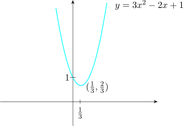
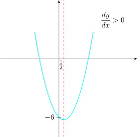
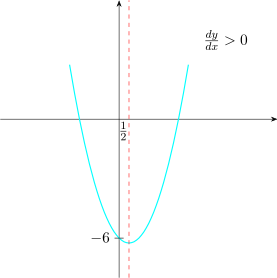
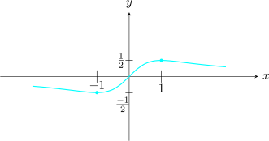
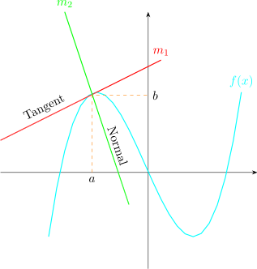
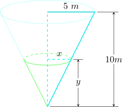

19 Curve Sketching
In sketching functions we are interested in:
- 1.
- Turning points
- 2.
- The \(y-\) intercepts
- 3.
- The zeros or roots, are the solution of \(f(x)=0\).
\begin {align*} y & = 3x^2-2x+1 = 3\bigg [x^2-\frac {2}{3}x+\frac {1}{3}\bigg ]\\\\ & = 3\bigg [\bigg (x-\frac {1}{3}\bigg )^2+\frac {1}{3}-\bigg (\frac {1}{3}\bigg )^2\bigg ]\\\\ & = 3\bigg [\bigg (x-\frac {1}{3}\bigg )^2+\frac {2}{9}\bigg ]\\\\ \implies y & = 3\bigg (x-\frac {1}{3}\bigg )^2+\frac {2}{3}\\ \end {align*}
Therefore, the turning point is \(\bigg (\dfrac {1}{3},\dfrac {2}{3}\bigg )\).
Now, \(y=3x^2-2x+1\)
\(\dfrac {dy}{dx}=6x-2\), solve the equation \(\dfrac {dy}{dx}=0\).
We have \(6x-2=0\implies x=\dfrac {1}{3}\).
So \(y=3\bigg (\dfrac {1}{3}\bigg )^2-2\bigg (\dfrac {1}{3}\bigg )+1=\dfrac {2}{3}\).
Therefore, \(\bigg (\dfrac {1}{3},\dfrac {2}{3}\bigg )\) is the turning point.
We can find the turning point of any curve by solving the equation \(\dfrac {dy}{dx}=0\).

Decreasing: \(\bigg (-\infty ,\dfrac {1}{3}\bigg ]\)
Increasing: \(\bigg (\dfrac {1}{3},\infty \bigg )\)
\(f(x)=x^2-x-6\)
\(\dfrac {df(x)}{dx}=2x-1,\hspace {0.3cm} \dfrac {df(x)}{dx}=0\)
\(\implies 2x-1=0\implies x=\dfrac {1}{2}\)

\[f(\frac {1}{2})=\bigg (\dfrac {1}{2}\bigg )^2-\bigg (\dfrac {1}{2}\bigg )-6\]
Find the turning points of the curve \(y=x^3-x^2+5x-1\).
\(\dfrac {dy}{dx}=3x^2-2x+5\)
\(\dfrac {dy}{dx}=0\implies 3x^2-2x+5=0\)
The function has no turning point.
A function \(f(x)=ax^2+bx+c\) has one turning point, a function of \(f(x)=ax^3+bx^2+cx+d\) has atleast one turning point or at most 2 points. \(\dfrac {dy}{dx}=0\) is a stationary point.
\(y=4x^3-3x^2-6x+2\)
\(\dfrac {dy}{dx}=12x^2-6x-6\)
\(\dfrac {dy}{dx}=0\implies 12x^2-6x-6=0\implies 2x^2-x-1=0\)
Thus \(x=1,-\dfrac {1}{2}\)
and \(y=-3, \dfrac {15}{4}\)

Increase: \(\bigg (-\infty ,-\dfrac {1}{2}\bigg )\cup (1,\infty )\)
Decreasing: \(\bigg (-\dfrac {1}{2},1\bigg )\)
To Determine Whether The Point Is Maximum Or Minimum We Use:
- the second derivative test
To use the test we proceed as follows
- (a)
- we solve the equation \(\dfrac {dy}{dx}=0, x=0\)
- (b)
- we find \(\dfrac {d^2y}{dx^2}\)
- i.
- if \(\dfrac {d^2y}{dx^2}>0\) at \(x=a\), then the function has a minimum at \(x=a\).
- ii.
- if \(\dfrac {d^2y}{dx^2}<0\) at \(x=a\), then the function has a maximum at \(x=a\).
- iii.
- if \(\dfrac {d^2y}{dx^2}=0\) at \(x=a\), the test fails.
Solution.
We solve the equation \(\dfrac {dy}{dx}=0:x=1\) and \(x=-\dfrac {1}{2}\).
To determine the nature of the following points.
\(\dfrac {dy}{dx}=12x^2-6x-6\implies \dfrac {d^2y}{dx^2}=24x-6\)
Using the second derivative test at \(x=1\) \[\frac {d^2y}{dx^2}\Bigg |_{x=1}=24(1)-6>0\]
\(\implies \) at \(x=1\), the curve has a minimum.
\[\text {At}\hspace {0.3cm} x=-\frac {1}{2},\hspace {0.3cm} \frac {d^2y}{dx^2}\Bigg |_{x=-\frac {1}{2}}=24\bigg (-\dfrac {1}{2}\bigg )-6<0\]
\(\implies \) at \(x=-\dfrac {1}{2}\), the curve has a maximum.
\(\dfrac {d^2y}{dx^2}=0\) will give you the point of inflection.
When sketching a curve of any function we need the following:
- 1.
- Turning points, by solving the equation \(\dfrac {dy}{dx}=0\).
- 2.
- The \(y-\)intercept by substituting \(x=0\).
- 3.
- The zero or roots of \(f(x)\) by solving \(f(x)=0\).
- 4.
- By identifying where the denominator\(=0\) and the horizontal asympototes by taking the limits
of \(f(x)\) in \(x\longrightarrow \pm \infty \).
Sketch the following:
- 1.
- \(y=\dfrac {1}{x+1}\)
- 2.
- \(y=\dfrac {x}{x^2+1}\)
- 3.
- \(y=\dfrac {\ln x}{x}\)
Solution to Q2
\(y=\dfrac {x}{x^2+1}\)
\(\dfrac {dy}{dx}=\dfrac {(x^2+1)(1)-x(2x)}{(x^2+1)^2}\)
\[\frac {dy}{dx}=0\implies \frac {(x^2+1)-2x^2}{(x^2+1)^2}=0\]
\[\implies x^2+1-2x^2=0\]
\[x^2=1\]
\[x=\pm 1\]
Now,
- when \(x=1\), then \(y=\dfrac {1}{2}\): \(\bigg (1,\dfrac {1}{2}\bigg )\).
- when \(x=-1\), then \(y=-\dfrac {1}{2}\): \(\bigg (-1,-\dfrac {1}{2}\bigg )\).
\(x^2+1\neq 0\), no vertical asymptotes.
\(\lim \limits _{x\longrightarrow \infty } \dfrac {x}{x^2+1}=0\)
\(\therefore \) \(y=0\) is the horizontal asymptote.

Gradient
The curve of \(f(x)\) has the gradient \(\dfrac {dy}{dx}\)

The equation of the tangent is \[y-y_1=\frac {dy}{dx}\Bigg |_{x=a} (x-x_1)\] The relationship in gradient between the tangent and the normal is \(m_1m_2=-1\).
- 1.
- Find an equation of the tangent and the normal to the curve:
- (a)
- \(y=4e^{\displaystyle {x}}\) at \(x=-\dfrac {1}{2}\)
- (b)
- \(y=\ln 2x\) at \(x=1\)
- (c)
- \(y=7x-e^{\displaystyle {x}}\) at \(x=2\).
Solution.
- 1.(c)
- \(y=7x-e^{\displaystyle {x}}\)
\(\implies \dfrac {dy}{dx}=7-e^{\displaystyle {x}}\) so at \(x=2\). \(\dfrac {dy}{dx}\Bigg |_{x=2}=7-e^2\).
This is the gradient of the curve at \(x=2\).
\(\implies \) The tangent has the gradient \(m_1=7-e^2\)

Rates of Change
- 1.
- How fast does the radius change when air is blown into a spherical balloon, at the rate of 10cm\(^3/\)s?
- 2.
- How fast does the water level drop when a cylindrical tank is drained at the rate of
3litre/sec?
Questions like these ask us to calculate the rate at which one variable change from the rate at which
the variable is known to change.
To calculate the rate, we write an equation that relate the two variables and differentiate it to get an
equation that relate the rate we seek to the rate we know.
- 1.
- How fast does the water level drop when a cylindrical tank is drained at the rate of 34 litres/sec.
- 2.
- Water runs into a conical tank at the rate of 2\(m^2/s\). The tank stands point down and has a
height of 10\(m\) and a base radius of \(5m\). How fast is the water level raising when the water is \(6m\)
deep.

The variables are
- \(V=\) volume \(m^3\) of water-the tank at time \(t\) (min)
- \(x=\) the radius \((m)\) of the surface of the water
- \(y=\) the depth \((m)\) of water-the tank at time \(t\)(min)
The constants are the dimensions of the tank and the rate. \(\dfrac {dv}{dt}=2m^3/s\) at which the tank fills.
We want the rate at which \(y\) is changing. i.e \(\dfrac {dy}{dx}\), when \(y=6\).
\[v=\frac {1}{3}\pi r^2h\]
\[v=\frac {1}{3}\pi x^2y\]
This equation relate \(v,x,y\).

\[ <ABC= <EDC,\hspace {0.7cm} \frac {x}{y}=\frac {5}{10},\hspace {0.7cm} x=\frac {1}{2}y\] \[\implies v=\frac {1}{3}\pi \bigg (\frac {1}{2}y\bigg )^2y=\frac {1}{12}\pi y^3\] \begin {align*} \text {Chain Rule}\hspace {0.5cm} \frac {du}{dt} & =\dfrac {dv}{dy}\cdot \frac {dy}{dt}\\\\ 2m^3/M & = \frac {1}{4}\pi y^2m^2\cdot \frac {dy}{dt}\\\\ \frac {dy}{dt} & = \frac {8}{\pi y^2}M/m \hspace {0.3cm} \text {at}\hspace {0.3cm} y=6\\\\ \frac {dy}{dt} & = \frac {8}{\pi (6)^2}M/m=\frac {8}{36}M/m\\\\ & = \frac {2}{9\pi }M/m \end {align*}
\[\text {(check the units if they are correct)}\]
Strategy for Solving Related Rate Problems
- 1.
- Draw a picture and name the variables and constants. Use it for time and assume that all variables are differentiable function to \(t\).
- 2.
- Write down any additional numerical information.
- 3.
- Write down what you are asked to find. Usually this is a rate expressed as a derivative.
- 4.
- Write an equation that relates the variables you may have to combine two or more equations to get a single equation that relates the variables whose rate you know.
- 5.
- Differentiate.
Sample Questions
- 1.
- Find the gradient of the curve with equation, \(5x^2+5y^2-6xy=13\) at the point \((1,2)\).
- 2.
- Differentiate the function \(f(x)=\dfrac {x^2+9}{x^2-1}\) with respect to \(x\).
Hence, find the value of \(x\) at which the function has a maximum and/or minimum and determine which of these it is. - 3.
-
- (a)
- Find the co-ordinates of all points on the curve for \(f(x)=\dfrac {x^2+1}{x}\) at which the gradient is \(-3\).
- (b)
- Find the stationary points and their nature for \(f(x)=x(x-4)^2\).
- 4.
- Let \(y=f(x)=(x-1)^2(x+2)(x-3)\)
- (a)
- find the \(y-\)intercepts.
- (b)
- find the turning points and determine their nature (max/min), using the second derivative test.
- (c)
- find the points of inflection (if any)
- (d)
- find the horizontal and vertical asymptotes (if any).
- (e)
- sketch the graph \(y=f(x)\), showing all necessary points.
- (f)
- Hence or otherwise, on separate axes, sketch the graph of \(y=-f(x)\).
- 5.
- Find the equation of the normal to the curve \(y=2-4x^2+x^3\) at the point \((1,-1)\).
- 6.
- Find and discuss the nature of the turning points on the curve and sketch
- (a)
- \(y=x^3-8\ln x, x>0\)
- (b)
- \(y=\dfrac {1}{x^2-1}\)
- (c)
- \(y=x^2-\ln x, x>0\)
- (d)
- \(y=8x-e^x\)
- (e)
- \(y=4x^2-9e^x\)
- (f)
- \(y=x^3-x^2+2, x=1.\)
- 7.
- Given that \(f(x)=x^3-3x^2+3\)
- (a)
- Find the critical points of the function \(f(x)\).
- (b)
- Find the nature of the critical points of \(f(x)\) in(a).
- (c)
- Sketch the graph of the function \(f(x)\).
Questions on this section
Stuck on something here? Ask below and it stays attached to this topic.